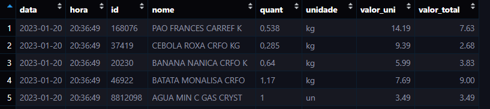

# Carregando os pacotes
library(pdftools) # manipulação de pdf
library(tidyverse) # conjunto de pacotes para manipulação e visualização
# Primeiro defini o diretório da pasta com as notas.
pasta <- "notas/notas/"
# lista os arquivos dentro da pasta
docs <- list.files(pasta, full.names = T)
# a função 'pega_produto' será responsável por encontrar cada linha da nota com os produtos
pega_produto <- function(pdf) {
df <-
pdf_text(pdf) |>
strsplit("\n") |>
unlist() |>
enframe(name = NULL, value = "linha")
data <- df |>
filter(str_detect(linha, pattern = "Data de Emissão")) |>
str_extract(pattern = "\\d{2}.\\d{2}.\\d{4}.\\d{2}.\\d{2}.\\d{2}")
produtos <- df |>
filter(str_detect(linha, pattern = "\\S\\d{4,}")) |>
filter(str_detect(linha, pattern = "^\\s{4,}\\d")) |>
mutate(linha = linha |> stringr::str_replace_all(pattern = "[\\s]{3,}", replacement = "---")) |>
separate(
col = linha, into = c(
"ts", "id", "nome", "quant",
"unidade", "valor_uni", "valor_total"
),
sep = "---", convert = F
) |>
select(-1)
dados_fim <- mutate(
.data = produtos,
data = rep(
data,
length(produtos$id)
)
) |>
separate(col = data, into = c("data", "hora"), sep = " ") |>
mutate(
hora = hora |> str_extract(pattern = "\\d{2}\\:\\d{2}\\:\\d{2}"),
valor_uni = valor_uni |> stringr::str_replace_all(
pattern = "[\\,]",
replacement = "."
),
valor_total = valor_total |> stringr::str_replace_all(
pattern = "[\\,]",
replacement = "."
)
) |>
relocate(data, hora) |>
mutate(
data = dmy(data),
id = as.factor(id),
valor_uni = as.numeric(valor_uni),
valor_total = as.numeric(valor_total)
)
return(dados_fim)
}
# criando a base de dados
base <- data.frame(data = NULL)
# para utilizar a função pega_produto() em cada nota usamos um loop for e juntamos as linhas com a função bind_rows()
for (i in 1:length(docs)) {
b1 <- pega_produto(docs[i])
base <- base |> bind_rows(b1)
}
# aqui visualizamos a base
base |> glimpse()
# e por fim salvamos
save(base, file = "notas/base.RData")BananaBudget
R
DataViz
ggplot2
Análise exploratória de gastos do mercado com o R com foco em visualização.
Introdução
Você já pensou qual seu gasto no mercado? Quais os produtos que mais compra? Qual a frequência que vai ao mercado?
Eu e o Diogo já!

Neste texto, vamos mostrar como manipulamos notas fiscais de mercado para responder às questões iniciais por meio da programação. Morando em Porto Alegre com mais duas pessoas (totalizando quatro), é fundamental ter um controle de gastos. Após vários meses registrando todos os gastos no mercado, surgiu a seguinte pergunta: “Será que podemos identificar quais produtos compramos com maior ou menor frequência?” (coisa de doido, né?). De certa forma, já sabíamos que, ao utilizar o CPF nas compras, as notas ficam armazenadas em algum lugar, mas não tínhamos certeza de onde.
No Rio Grande do Sul, assim como em outros estados, existe um sistema de “recompensa” chamado Nota Fiscal Gaúcha. Ao adicionar o CPF nas notas, você concorre a prêmios e outras vantagens. Além disso, é possível acessar todas as notas fiscais, com informações como data, produtos adquiridos, preços e estabelecimentos.
Uma maneira de obter essas notas é por meio de “web scraping”. Para saber mais sobre esse processo, você pode conferir o Post, onde descrevemos como realizá-lo.
Com notas na mão (ou no pc) é hora de organizar os dados!
Extração de dados dos pdfs
Criamos uma função chamada “pega_produto()”, essa função identifica padrões no texto e separa as informações em um data frame, onde cada linha representa um produto comprado. Ao aplicar essa função em todas as notas, obtemos uma base de dados com os seguintes campos: Data, Hora, Nome do Produto, Preço do Produto… (Figura 1)

Organização dos dados
Nossa base de dados foi construída com 205 notas fiscais do período de janeiro a dezembro de 2023. Após uma visualização prévia, decidimos criar uma variável relacionada ao tipo de produto, resultando na variável “categoria” (conforme apresentado na Tabela 1). O número de categorias foi determinado subjetivamente, com a intenção de discriminar adequadamente os produtos.
| Categoria | Item |
|---|---|
| Carboidratos | Pão, Massas, Arroz… |
| Doces | Chocolate, Sorvete, Bolacha… |
| Bebidas | Leite, Refrigerante, Água… |
| Embutidos | Queijo, Linguiça Calabresa, Bacon… |
| Carnes E Ovos | Ovo, Carnes Vermelhas, Peito de Frango… |
| Higiene | Desodorante, Sabonete… |
| Frutas | Banana, Maça, Uva… |
| Verduras | Tomate, Pepino, Alface… |
| Limpeza | Amaciante, Detergente… |
| Temperos E Molhos | Massa de Tomate, Salsa, Orégano… |
Tivemos que tomar algumas decisões em relação aos produtos que iríamos incluir na tabela. O primeiro ponto foi determinar que produtos que tivessem apenas uma compra seriam excluídos. Nossa pergunta inicial não visa produtos específicos, mas sim um padrão de consumo geral.
Uma maneira que encontramos para agrupar produtos foi utilizar apenas a primeira palavra do nome do item. No entanto, observamos dois problemas: o primeiro foi a ocorrência de produtos iguais com nomes iniciais diferentes, enquanto o segundo foi a presença de produtos diferentes com nomes iniciais iguais.
Exemplo 1: A palavra \(\textbf{CHOC}\) e \(\textbf{CHO}\) representava o mesmo produto, chocolate.
Exemplo 2: A palavra \(\textbf{MINI}\) era observada no \(\textbf{MINI TOMATE}\) e no \(\textbf{MINI PANETONE}\).
Esses casos foram tratados de forma manual e caso a caso.
# realizamos uma organização após uma visualização prêvia das categorias
base <- base |>
mutate(
categoria = as.factor(cat),
hora = hms(hora),
mes = month(data),
inicial = ini
) |>
select(!c(cat, ini)) |>
mutate(
mes = case_match(
mes,
1 ~ "jan",
2 ~ "fev",
3 ~ "mar",
4 ~ "abr",
5 ~ "mai",
6 ~ "jun",
7 ~ "jul",
8 ~ "ago",
9 ~ "set",
10 ~ "out",
11 ~ "nov",
12 ~ "dez"
),
mes = str_to_title(mes),
categoria = str_to_title(categoria),
mes = factor(mes, ordered = T, levels = c(
"Jan", "Fev", "Mar", "Abr", "Mai",
"Jun", "Jul", "Ago", "Set", "Out", "Nov", "Dez"
))
) |>
mutate( # aqui é onde realizamos a junção mencionadas nos exemplos 1 e 2
inicial = case_when(
inicial == "CHO" | inicial == "BOMBOM" ~ "CHOC",
inicial == "SORVETE" ~ "SORV",
inicial == "BISCOITO" | inicial == "COOKIE" | inicial == "CLUB" | inicial == "BARRA" ~ "BISC",
inicial == "DOCE" | inicial == "ECLAIR" | inicial == "BIBIS" ~ "BALA",
inicial == "CONFEITO" | inicial == "MIST" ~ "BOLO",
inicial == "REFR" | inicial == "BIPACK" ~ "REFRIG",
inicial == "VH" ~ "VHO",
inicial == "MINI" ~ "TOMATE",
.default = as.character(inicial)
))Gasto total por categoria
A primeira visualização foi focada em observar o gasto total em cada uma das categorias e o número de compras efetuadas.
# pacotes utilizados em todos os gráficos
library(tidyverse)
library(showtext)
library(ggtext)base |>
group_by(categoria) |>
summarise(
valor_total = sum(valor_total),
numero = n()
) |>
ggplot() +
aes(x = fct_reorder(categoria, valor_total), y = valor_total) +
# geom_col(fill = "firebrick") +
geom_col(fill = "firebrick") +
coord_flip() +
geom_richtext(
mapping = aes(
label = "O nº diz respeito a quantidade <br> de itens comprados",
x = 4, y = 2000
), size = 4,
fill = "gray70", label.color = NA,
family = "Black Ops One",
label.padding = unit(c(0.30, 0.30, 0.30, 0.30), "lines"),
) +
labs(
x = element_blank(),
y = "Valor total [R$]",
title = "Gasto total por categoria",
caption = social_caption
) +
geom_text(
mapping = aes(label = paste("nº", numero)),
nudge_y = -125, col = "gray98", size = 5, fontface = "bold"
) +
theme_minimal(23) +
theme(
text = element_text(family = "Black Ops One", size = 20),
plot.background = element_rect(fill = "gray90"),
plot.caption = element_textbox_simple(size = 12)
)
Gasto mensal das principais categorias
O segundo gráfico mostra o gasto mês-a-mês para cada categoria. Para isso utilizamos apenas as 5 maiores categorias em total de gasto.
gg_bonito <- base |>
group_by(categoria, mes) |>
summarise(
valor_total = sum(valor_total),
numero = n()
) |>
filter(!categoria %in% c(
"Temperos E Molhos",
"Limpeza", "Verduras",
"Frutas", "Higiene"
))
gg_bonito2 <- gg_bonito |>
group_by(mes) |>
mutate(
total_mensal = sum(valor_total),
valor_cat = total_mensal - valor_total
)
ggplot(gg_bonito) +
aes(
x = mes,
node = categoria,
fill = categoria,
value = valor_total
) +
geom_sankey_bump(
space = 0,
type = "alluvial",
color = "transparent",
smooth = 6
) +
scale_fill_viridis_d(option = "A", alpha = .8) +
theme_sankey_bump(base_size = 16) +
scale_x_discrete(expand = c(.01, .001)) +
# coord_cartesian(expand = F, clip = "off") +
labs(
title = "Despesas mensais em diferentes categorias de alimentos",
y = "Valor Total Mensal [R$]",
x = element_blank(),
fill = NULL,
caption = social_caption
) +
geom_richtext(
mapping = aes(
label = "Espessura da linha indica o <span style = 'color:tomato;'>gasto da categoria</span>. <br> O somatório de todas as espessuras <br> indica o <span style = 'color:tomato;'>valor total mensal</span>.",
x = 3.3, y = 840
), size = 4.4,
fill = NA, label.color = NA,
family = "Playfair Display",
label.padding = grid::unit(rep(0, 4), "pt")
) +
theme(
text = element_text(family = "Playfair Display", size = 20),
legend.position = c(.35, .9),
legend.background = element_rect(fill = "transparent"),
legend.direction = "horizontal",
legend.text = element_text(size = 15),
plot.caption = element_textbox_simple(size = 12)
)
Gasto mensal e total dos principais produtos
Na última análise, consideramos as categorias que registraram o maior número de compras. Para isso, utilizamos as seguintes categorias: carboidratos, doces, bebidas, frutas e verduras. Dentro de cada uma dessas categorias, identificamos os produtos mais frequentemente adquiridos e os representamos em um único gráfico.
É importante mencionar que, embora o tomate seja botanicamente classificado como uma fruta, optamos por incluí-lo na categoria verdura. Colocamos ele na categoria verdura pois comemos na salada e não como sobremesa!
dft <- base |>
filter(categoria %in% c("Carboidratos", "Doces", "Bebidas", "Frutas", "Verduras")) |>
filter(inicial %in% c("PAO", "CHOC", "REFRIG", "BANANA", "TOMATE")) |>
group_by(mes, categoria, inicial) |>
summarise(
valor_total = sum(valor_total),
numero = n()
) |>
mutate(inicial = case_match(
inicial,
"BANANA" ~ "Banana",
"CHOC" ~ "Chocolate",
"PAO" ~ "Pão",
"REFRIG" ~ "Refrigerante",
"TOMATE" ~ "Tomate"
))
valor_dez <- dft |> filter(mes == "Dez")
tot_maximo <- dft |>
group_by(inicial) |>
summarise(total = round(sum(valor_total))) |>
mutate(
texto = c(
"Sweet Banana", "Cream Cheese Demo",
"Bready Alternates Demo", "Loki Cola",
"Sweet Banana"
),
cor = c(
"gold3", "chocolate4", "darkgoldenrod3",
"firebrick3", "tomato2"
)
) |>
full_join(valor_dez)
github_icon <- ""
git_gf <- "FGu5tav0"
git_dv <- "DiogoVBol"
social_caption <- glue::glue(
"<span style='font-family:\"Font Awesome 6 Brands\";'>{github_icon};</span>
<span style='color: #000000'>{git_gf}</span> <br> <span style='font-family:\"Font Awesome 6 Brands\";'>{github_icon};</span>
<span style='color: #000000'>{git_dv}</span>"
)
# com facet ---------------------------------------------------------------
dft |>
ggplot() +
aes(x = mes, y = valor_total, group = 1) +
facet_wrap(~inicial, ncol = 1, scales = "free_y") +
geom_line(linewidth = 2, col = "gray40") +
geom_point(mapping = aes(fill = inicial), pch = 21, size = 6, col = "gray90", stroke = 2) +
labs(
x = element_blank(),
y = "Valor Total [R$]",
fill = element_blank(),
title = "Valor mensal pago dos produtos \nmais consumidos por categoria",
caption = social_caption
) +
ggfx::with_shadow(
geom_text(
data = tot_maximo,
mapping = aes(
label = inicial,
family = texto,
x = 3, y = +Inf,
col = cor,
vjust = 1.4
),
nudge_x = 1.3,
size = 20,
lineheight = 1
),
colour = "gray70",
sigma = 20
) +
ylim(0, NA) +
scale_x_discrete(expand = expansion(mult = c(0, .20))) +
coord_cartesian(clip = "off") +
geom_text(
data = tot_maximo,
mapping = aes(
label = paste("R$", total),
col = cor,
x = 12, y = valor_total
),
family = "Banana",
nudge_x = 1.3,
size = 10,
lineheight = 1
) +
scale_color_identity() +
scale_fill_manual(values = c(
"gold3", "chocolate4", "darkgoldenrod3",
"firebrick3", "tomato2"
)) +
theme_minimal(28) +
theme(
strip.text = element_blank(),
plot.background = element_rect(fill = "gray90"),
panel.grid.minor.y = element_blank(),
axis.title = element_blank(),
axis.text = element_text(family = "Sweet Banana"),
panel.grid.minor = element_line(),
legend.position = "none",
plot.title = element_text(
family = "Brain Melt regular",
size = 35, hjust = 0
),
plot.margin = margin(t = 10, r = 10, b = 10, l = 10),
plot.caption = element_textbox_simple(size = 16, hjust = -1, halign = -.05)
)
Conclusão
Nesse texto, demonstramos como é possível obter informações sobre seus gastos pessoais por meio de web scraping, manipulação e visualização de dados utilizando R e Python. As descobertas aqui foram de caráter exploratório, e uma nova análise com cunho estatístico será realizada em um post futuro. Surgem perguntas interessantes, como: Tenho um dia da semana preferido para ir ao mercado? Ou, a frequência de vezes que vou ao mercado pode prever o preço que gasto no mês?
Nota
Os códigos apresentados foram produzidos sem critérios de qualidade. Melhorias ainda podem ser feitas.